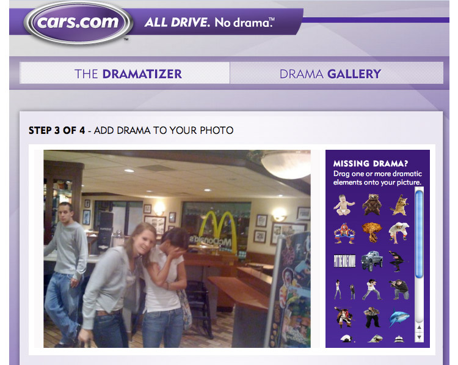
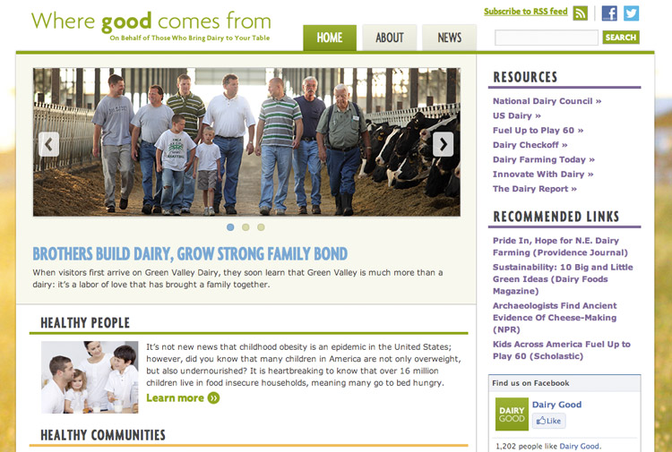
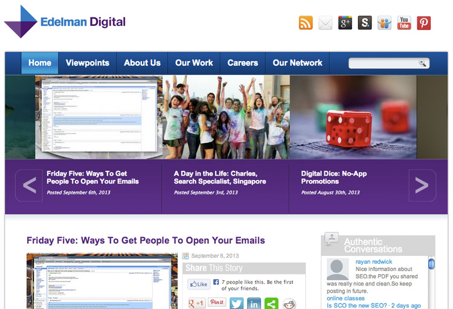
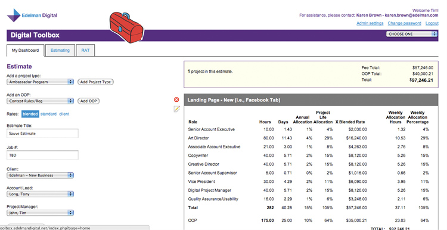
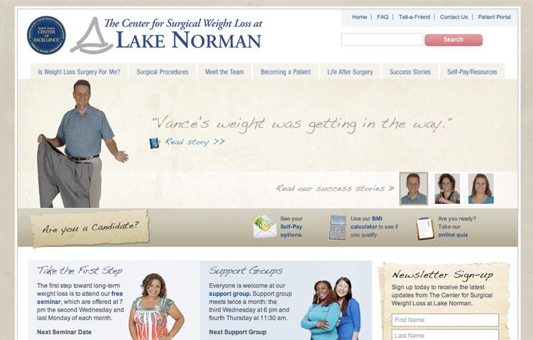

Contact:
timjahn@gmail.com
847-293-5102
The portfolio of Tim Jahn
Freelance web developer

Client:
Cars.com
Website:
http://www.cars.com/dramatizer
Description:
A Facebook app created for Cars.com that allows visitors to "dramatize" their Facebook photos. Built with PHP CodeIgniter framework.

Client:
Innovation Center for U.S. Dairy
Website:
http://www.dairygood.org
Description:
A mobile responsive WordPress site with a custom created theme, custom Javascript, and forms.

Client:
Edelman Digital
Website:
http://www.edelmandigital.com
Description:
A WordPress site with a custom created theme, custom Javascript, and forms.

Client:
Edelman Digital
Website:
Built for internal use
Description:
A custom PHP web application built for internal use at Edelman Digital to track resource allocation.

Client:
The Center for Surgical Weight Loss at Lake Norman
Website:
http://www.lnrmcsurgicalweightloss.com/
Description:
A mobile responsive WordPress site with a custom created theme, custom Javascript, and forms.